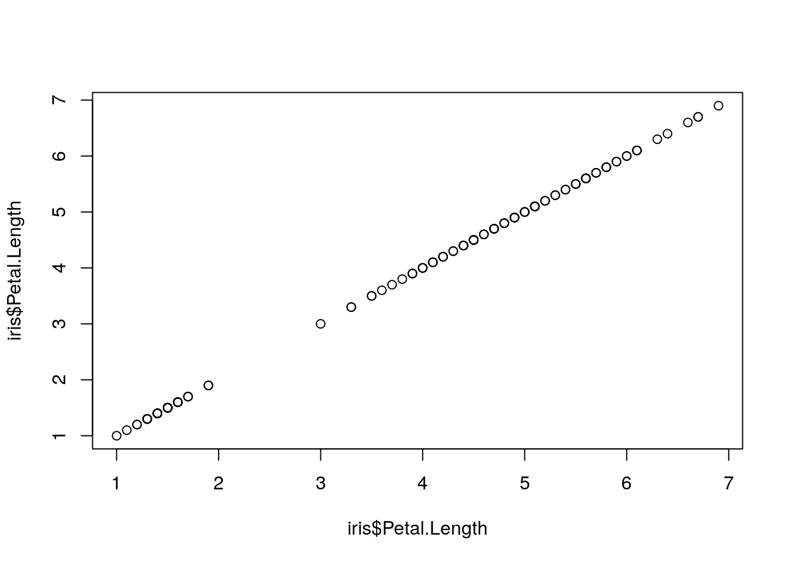
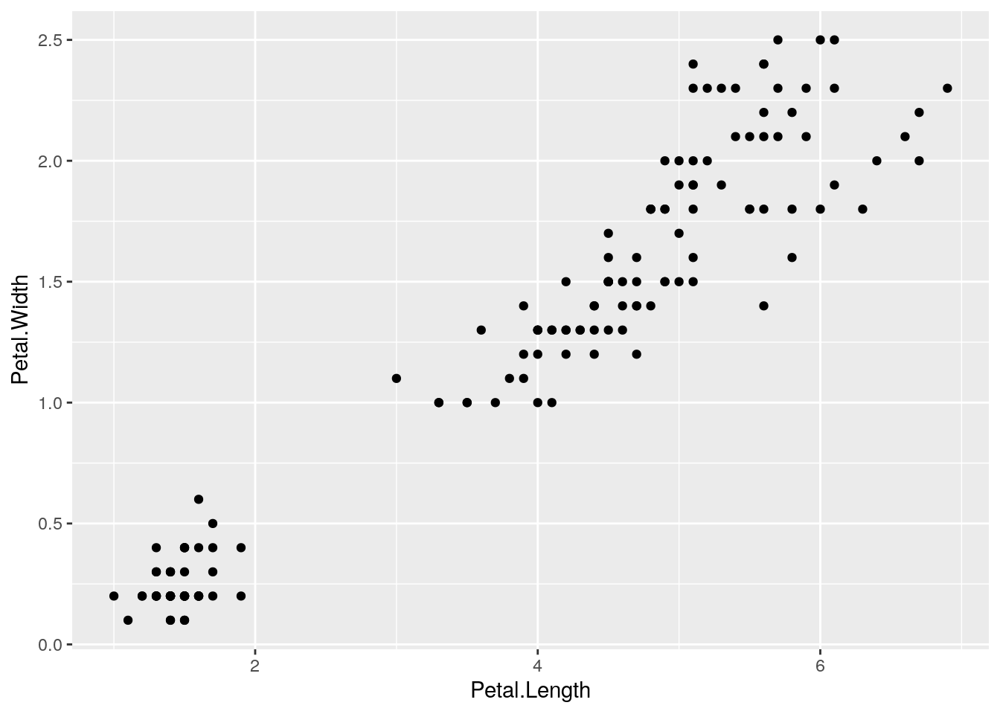
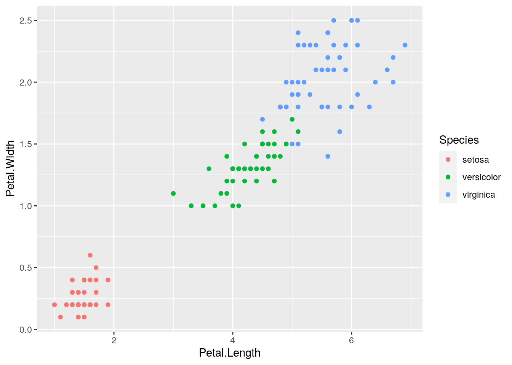
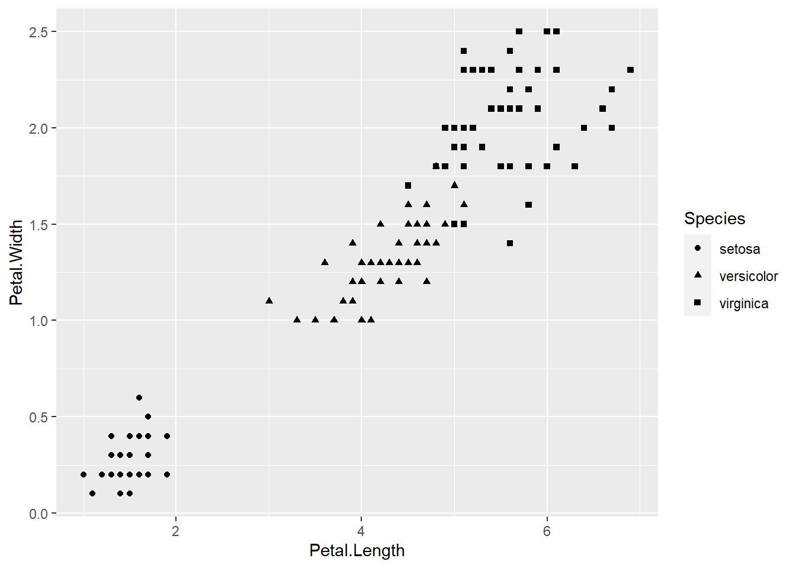
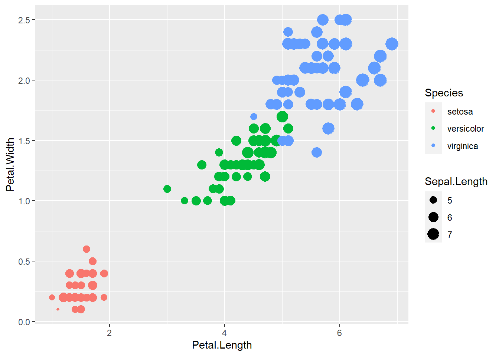

Unidad 1 Introducción a R y RStudio
Sofía Carusso1
Museo Argentino de Ciencias Naturales Bernardino Rivadavia-CONICET
& María Victoria Quiroga2
Instituto Tecnológico de Chascomús (INTECH, UNSAM-CONICET), Escuela de Bio y Nanotecnologías (UNSAM)
1.1 Instalación
Seguir las indicaciones de la página https://posit.co/download/rstudio-desktop/ para descargar e instalar R y RStudio. Es muy importante que lo haga de manera secuencial como se indica, primero R y luego RStudio.
Figure 1.1: Instalación de R y RStudio.
1.2 RStudio
La primera vez que abrimos RStudio la interfaz nos muestra tres paneles:
- Panel izquierdo -Consola: donde corremos el código
- Panel derecho superior -solapa Entorno: vemos los datos y funciones que cargamos en la sesión de R.
- Panel derecho inferior -solapa Files: directorio de trabajo y archivos dentro de la carpeta.
- Panel derecho inferior -solapa: Gráficos: visualización de plots.
- Panel derecho inferior -solapa: Paquetes: visualización/carga/actualización de paquetes de R.
- Panel derecho inferior -solapa: Ayuda: Recuerde que puede buscar ayuda desde esta solapa o tipeado en la consola
?nombre_del_comando.

Figure 1.2: Interfaz de RStudio.
1.3 A trabajar!
1.3.1 Crear un Proyecto
- Click en
File( esquina superior izquierda en Figura 1.2). - Click en
New Project. - Click en
New Directory. - Click en
New Project. - Escribir el nombre de la carpeta, que será el Directorio de Trabajo y contendrá el Proyecto. Se puede setear la ubicación de la carpeta haciendo click en
Browse. En la Figura 1.3 se creó la carpeta LimonologiaR_U01 en el Escritorio. - Click en
Create Project.

Figure 1.3: Crear un nuevo proyecto para la Unidad 1.
Ver el Directorio de Trabajo:
getwd()Recomendaciones:
Crear una carpeta para cada unidad, para tener los análisis separados y ordenados.
Generar nombres de carpetas y archivos sin espacios, acentos o caracteres especiales.
1.3.2 Crear un R Script
- Click en
New file. - Click en
R Script.
- Se puede utilizar el atajo
Ctrl+Shift+N.
Recuerde las recomendaciones para nombrar archivos al guardar el script.
El script se va a guardar como archivo .R en el Directorio de Trabajo.
Figure 1.4: Crear un nuevo R Script.
En este script se escribe y guarda el código.
Una forma fácil de copiar código es utilizando el botón Copy to clipboard que se encuentra en la esquina superior izquierda de los bloques de código (Figura 1.5).
Figure 1.5: Copiar código desde el material del taller.
Se pega o escribe código en el script y se guarda haciendo click como se indica en el recuadro 1 de la Figura 1.6.
El código en el script se ejecuta haciendo click en Run the current line or selection ( recuadro 2 en Figura 1.6). Podemos ejecutar de una línea por vez: nos situamos en una línea y hacemos click; o podemos ejecutar varias líneas juntas: seleccionamos el set de líneas y hacemos click. La última opción no se recomineda si es la primera vez que corre el código.
El código se ejecuta en la consola Figura 1.6.2.
Se observan los resultados en la consola Figura 1.6.3.
Los resultados se pueden copiar de la consola y pegar en el script. Recuerde marcar los resultados como comentarios (líneas que comienzan con #). Atajo: seleccionar todas las lineas de resultados y presionar Ctrl+Shift+C.
R no ejecuta lo que se encuentra después de #.
Figure 1.6: Trabajo en la interfaz de RStudio. 1- Guardar Script. 2- Ejecutar código desde Script. 3- Resultados en consola
1.3.3 Instalar y cargar paquetes
Los paquetes se instalan (por única vez) desde la consola con install.packages("nombre") o desde la interfase de la solapa Packages.
Los paquetes se cargan en la sesión con library("nombre").
- Buenas prácticas! Conviene poner todas las librerías que se vayan a usar al comienzo.
1.3.4 Importar datos
Hay diversas maneras de leer datos. Podemos leer datos
.txt
- Conviene guardar la base de datos como txt (Tab delimited); donde las columnas quedan definidas por espacios.
.csv Comma/Separated Values
- Archivos de texto separados por comas. Se forma una tabla de filas y columnas
.xls
Generalmente se utiliza un comando read, por ejemplo read.csv("Nombre del archivo.csv"), según el tipo de archivo que se trate (txt, xlsx, etc.)
Una vez que tenemos cargado nuestro conjunto de datos nos puede interesar realizar algunos comandos exploratorios que nos van a dar información acerca de este data frame (estructura de datos).
summary(objeto)- La salida va a depender de la clase de objeto al cual lo aplicamos.
- Útil para ver información básica sobre nuestras variables
- Para data frames el summary nos devuelve el valor mínimo, máximo, la mediana y el 1er y 3er cuantil.
- Si se aplica para salidas de modelos lineales (Ver Unidad 2), nos proporciona información acerca de los residuos, los coeficientes del modelo, el error estándar residual, R2, el R ajustado, el estadístico F y el p valor.
str(objeto)- Nos devuelve cuántas observaciones tiene el data frame, información acerca de las variables (son numéricas? factores?); como esta estructurado nuestro conjunto de datos.
head(objeto)ytail(objeto)- Nos da las primeras y últimas filas, respectivamente.
class(objeto)- Devuelve qué tipo de objeto es (data frame, matrix, vector, etc).
data("iris")
summary(iris)## Sepal.Length Sepal.Width Petal.Length Petal.Width
## Min. :4.300 Min. :2.000 Min. :1.000 Min. :0.100
## 1st Qu.:5.100 1st Qu.:2.800 1st Qu.:1.600 1st Qu.:0.300
## Median :5.800 Median :3.000 Median :4.350 Median :1.300
## Mean :5.843 Mean :3.057 Mean :3.758 Mean :1.199
## 3rd Qu.:6.400 3rd Qu.:3.300 3rd Qu.:5.100 3rd Qu.:1.800
## Max. :7.900 Max. :4.400 Max. :6.900 Max. :2.500
## Species
## setosa :50
## versicolor:50
## virginica :50
##
##
## str(iris)## 'data.frame': 150 obs. of 5 variables:
## $ Sepal.Length: num 5.1 4.9 4.7 4.6 5 5.4 4.6 5 4.4 4.9 ...
## $ Sepal.Width : num 3.5 3 3.2 3.1 3.6 3.9 3.4 3.4 2.9 3.1 ...
## $ Petal.Length: num 1.4 1.4 1.3 1.5 1.4 1.7 1.4 1.5 1.4 1.5 ...
## $ Petal.Width : num 0.2 0.2 0.2 0.2 0.2 0.4 0.3 0.2 0.2 0.1 ...
## $ Species : Factor w/ 3 levels "setosa","versicolor",..: 1 1 1 1 1 1 1 1 1 1 ...head(iris)## Sepal.Length Sepal.Width Petal.Length Petal.Width Species
## 1 5.1 3.5 1.4 0.2 setosa
## 2 4.9 3.0 1.4 0.2 setosa
## 3 4.7 3.2 1.3 0.2 setosa
## 4 4.6 3.1 1.5 0.2 setosa
## 5 5.0 3.6 1.4 0.2 setosa
## 6 5.4 3.9 1.7 0.4 setosaclass(iris)## [1] "data.frame"1.3.5 Visualizar y manipular datos
Qué tipo de variables hay?
Existen variables numéricas (num), factores (que pueden tener varios niveles, factor), char o de caracter. Generalmente R detecta el tipo de variable al cargar los datos. Se puede transformar variables entre sí.
- Observación El comando
c()nos permite concatenar elementos. Siempre que se selecciona más de un elemento se debe concatenar.
Por ejemplo,
variable <- c(1,2,1,1,1,2,2,2,1)
class(variable)## [1] "numeric"factor <- factor(variable, levels = c(1,2), labels=c("Nivel 1", "Nivel 2"))De esta manera, transformamos una variable numerica en un factor con dos niveles, Nivel 1 y 2. Nos puede ser útil en caso de tener una variable tomada desde campo (o de encuestas) como numérica y querramos que sea categórica.
Podemos acceder a elementos particulares dentro del data frame, ya sea porque nos interesa ver ese elemento individual, para sacarlo del data frame, para armar filtros o para realizar ciertos análisis con una parte del data frame. Se trabaja con coordenadas (x,y), donde x es la fila e y la columna.
Si quiero todos los datos de una fila en particular, por ejemplo la 17 se escribe iris[17,] (seleccionamos la fila y las columnas quedan vacías porque queremos verlas todas).
De la misma manera, si queremos ver solamente una columna iris[,3]. También podemos llamarlo según el nombre de la misma iris[,"Species"].
Para seleccionar los primeros 10 datos iris[1:10,] (o con el comando que ya vimos Head()).
Si queremos seleccionar varias filas simplemente las concatenamos. Entonces si escribimosiris[c(1:5), c(2,3)] Qué seleccionamos en este caso?
Qué pasa si quiero seleccionar una sola variable? Podemos! El signo $ indica que se selecciona una columna dentro del dataframe que lo precede.
iris$Sepcies me permite ver toda la columna de la variable Especies. De esta manera, incluso podemos crear variables nuevas, asignandolas de la siguiente manera
iris$variable.nueva <- iris$Sepal.Length/iris$Sepal.WidthQué variable nueva acabamos de crear?
- Ojo! Si no le asignamos el dataframe a la variable nueva con el signo
$(iris$variablenueva) el R la va a crear por fuera de nuesto data frame como un vector de los valores.
Subsets
Como lo indica el nombre, nos quedamos con una porción que seleccionemos del data frame, y sobre el cual podremos operar de manera independiente, sin que el data frame original se vea afectado.
En el ejemplo con iris, podemos crear un subset que contenga solamente a la especie iris setosa.
setosa <- subset(iris, iris$Species=="setosa")Para aquellos que se sientan más cómodos, la libreria dplyr permite hacer que las selecciones y filtros sea más fácil. Suma mucho a la facilidad del trabajo aprender a usarla!
library(dplyr)
setosa.dplyr <- iris %>%
filter (Species %in% "setosa") Hay muchas formas de hacer subsets! Es cuestion de usar aquella con la que se sientan más cómodos.
1.3.6 Gráficos exploratorios básicos
La visualización de datos es un punto clave dentro de cualquier análisis. Los gráficos son útiles para explorar datos, interpretarlos, identificar patrones, detectar outliers y constituyen una de las mejores maneras de comunicar los resultados.
¿Qué tipos de gráficos existen?
Hay una enorme diversidad, e incluso se pueden utilizar combinaciones de ellos para aumentar la información comunicada.
- Gráfico de barras
- Muestra una barra para cada categoría de una variable categórica. El alto muestra el valor observado para cada categoría (Fig 1.A)
- Gráfico de puntos/dispersión/scatter plot
- Muestra la relación entre dos variables numéricas.
- Histograma
- Aplica para variables cuantitativas. Permite ver la distribucion de la variable.
- Boxplot
- Aplica para variables cuantitativas. Muestra una serie de medidas de resumnen para dicha variable. Se suele graficar junto a una variable categórica para permitir la comparación entre niveles.
library(ggplot2)## Warning: package 'ggplot2' was built under R version 4.2.2library(ggpubr)## Warning: package 'ggpubr' was built under R version 4.2.2library(grid)
barra <- iris %>%
group_by(Species) %>%
summarise(n=n()) %>%
ggplot(aes(Species,n, fill=Species))+
geom_bar(stat="identity")
scatter <- iris %>%
ggplot(aes(Sepal.Length, Petal.Length, color=Species)) +
geom_point()
histo <- iris %>%
ggplot(aes(Sepal.Length, fill=Species)) +
geom_histogram()
box <- iris %>%
ggplot(aes(Species, Petal.Length, fill=Species)) +
geom_boxplot()ggarrange(barra,scatter,histo,box, ncol=2, nrow = 2, widths = c(0.5,0.5), labels=c("A", "B", "C", "D"))## `stat_bin()` using `bins = 30`. Pick better value with `binwidth`.Figure 1.7: Tipos de gráficos. A) Gráfico de barras. B) Scatter plot, gráfico de puntos. C) Histograma. D) Boxplot
¿R base o Ggplot2?
La librería en la que se suelen armar los gráficos y que nunca falta en ningún script es ggplot2. Sin embargo, R permite realizar gráficos nativamente sin librerías.
R base
Las ventajas de usar R base para graficar es que es su rapidez para visualizar las relaciones entre variables, sin tener que preocuparnos por acordarnos de la sintaxis del script. Sin embargo, ggplot2 ofrece una variedad de combinaciones de customizacion para presentar los datos difícil de equiparar.
El comando básico es plot()entre dos variables. Es decir,
plot(iris$Petal.Length,iris$Petal.Length)
De ahi en adelante, se pueden agregar distintos parámetros que hagan a la customizacion. Por ejemplo,
plot(iris$Petal.Length,iris$Petal.Width,
cex=2, # Tamaño de la forma
pch=16, # Forma (puede ser circulo, triangulo, etc)
xlab="Petal Length", # Titulo del eje x
ylab="Petal Width", # Titulo del eje y
main="Petal Width vs Petal Length of Iris", # Titulo del grafico
col=iris$Species) # Si quiero agregarle color a los puntos. En ese caso, lo hace segun los niveles de la variable Species.
legend(x=1, y=2.4, legend=levels(iris$Species), col=c(1:3), pch=16) # Leyenda Figure 1.8: Tipos de gráficos
Veamos como se hace el resto de los gráficos:
# Barra
plot(iris$Species)Figure 1.9: Tipos de gráficos
# Boxplot
plot(iris$Species, iris$Sepal.Length,
xlab="Species",
ylab="Sepal Lenght",
main="Sepal Lenght by Iris species",
col="skyblue")
Figure 1.10: Tipos de gráficos
# Historgram
hist(iris$Sepal.Width,
col="yellow",
xlab="Sepal Width",
main="Histogram of Sepal Width",
breaks=30)Figure 1.11: Tipos de gráficos
# Qué pasa si queremos plotear el data frame entero?
plot(iris)Figure 1.12: Tipos de gráficos
ggplot2
Este paquete tiene una manera de escribirse particular en capas. Los gráficos de ggplot2 está compuesto por los datos, por un conjunto de características estéticas a tener en cuenta entre los datos junto con los aspectos visuales (aes, aesthetic mapping) y por al menos una capa que indica cómo se debe manipular cada observación (geom_).
library(ggplot2)
ggplot(iris, aes(x=Petal.Length, y=Petal.Width))+
geom_point()
- Buenas prácticas! Conviene usar un renglón por capa, de esta manera es fácil detectar errores y ver cómo se va modificando el gráfico a medida que van agregando capas.
Al igual que en el plot del R base, se pueden cambiar los colores y formas. Sin embargo, esto va a estar atado a qué elemento queremos cambiar.
ggplot(iris, aes(x=Petal.Length, y=Petal.Width))+
geom_point(aes(colour=Species)) 
En este caso, quise cambiar el color de los puntos. Para ello, lo tengo que especificar en la capa aes del geom_point.
ggplot(iris, aes(x=Petal.Length, y=Petal.Width, color=Species))+
geom_point() 
También puede ir en el aes general del gráfico. No solo puedo cambiar el color, sino también formas. O combinar todo:
ggplot(iris, aes(x=Petal.Length, y=Petal.Width, shape=Species))+
geom_point() 
ggplot(iris, aes(x=Petal.Length, y=Petal.Width, size=Sepal.Length))+
geom_point(aes(color=Species)) 
Noten que se generan automáticamente las leyendas, según vamos cambiando lo estético, a diferencia de R base.
Este es un primer pantallazo el mundo de ggplot. Hay mucho para aprender y en general, todo lo que quieran graficar van a poder, y de muchisimas maneras.
Google es su gran amigo!
1.3.7 Recursos extra recomendados
Uso de la libreria ggpubr para alinear plots http://www.sthda.com/english/articles/24-ggpubr-publication-ready-plots/81-ggplot2-easy-way-to-mix-multiple-graphs-on-the-same-page/
Healy K. 2019. Data visualization: A practical Introduction Versión libre online:
https://socviz.co/index.html#preface
R Charts https://r-charts.com/es/ggplot2/
Cheatsheet en Code http://zevross.com/blog/2014/08/04/beautiful-plotting-in-r-a-ggplot2-cheatsheet-3